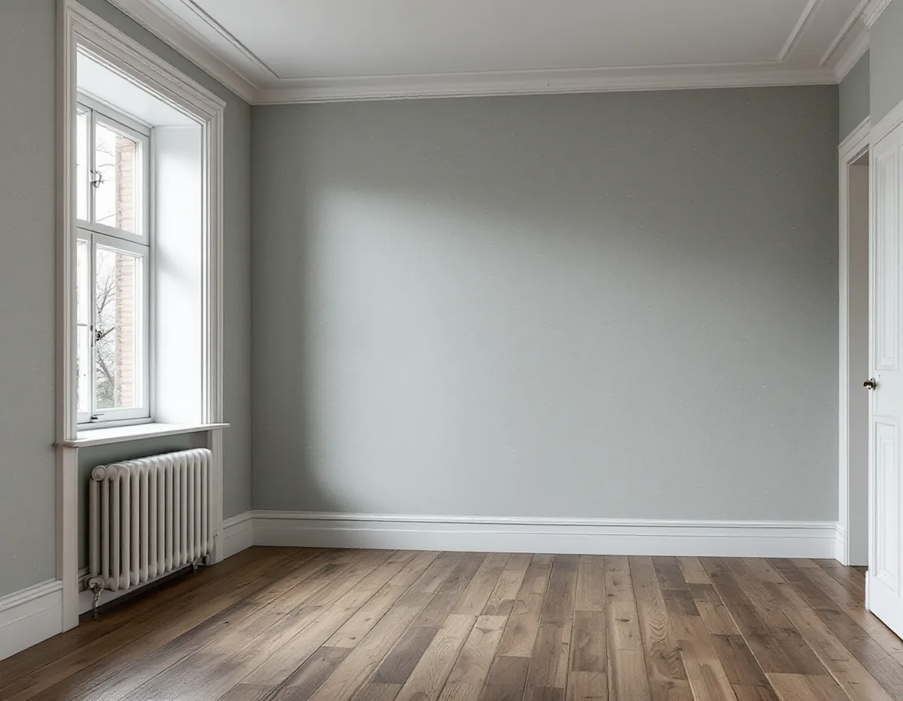
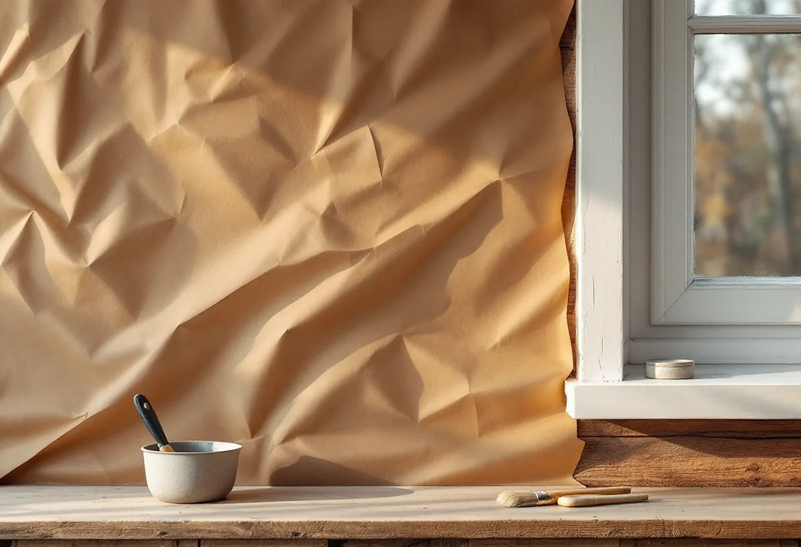

Platsbesök
Vi ser om väggen är timmer, papp, puts eller skiva och hur gamla lagren är.
Ett timmerhus vid Stora gatan eller på Malmen kan ha väggar som är långt ifrån raka och lager som är mycket gamla. Där kan även detaljplanen ha något att säga om interiören. Geal Entreprenad AB tapetserar i villor, radhus och bostadsrätter i Sigtuna kommun och tar reda på förutsättningarna innan den gamla tapeten tas ner.

Kommunens bevarande- och förnyelseplan för Sigtuna stad beskriver en trähusbebyggelse från 1700-talet fram till våra dagar. Enligt brandförsäkringshandlingar från mitten av 1800-talet bestod staden mest av låga trähus, med bostadshus i timmer och uthus i timmer, korsvirke eller som stolphus. Redan på 1850-talet började många hus få panel, och husen var rödmålade med slam- eller oljefärg.
Den småskaliga trähusbebyggelsen i den centrala staden och på Malmen är enligt planen ett starkt karaktärsdrag: byggnader i huvudsak i timmer med rödfärgad eller oljemålad panel och tegeltak. De långsmala kvarteren som utgår från Stora gatan har i vissa fall en hävd på över 1000 år, och flera av dem har trähus som är upp mot nästan 300 år gamla.

Inom planens område finns ungefär 60 gällande detaljplaner, och flera av dem har skydds- och varsamhetsbestämmelser. Planen förklarar att en skyddsbestämmelse kan omfatta både exteriör och interiör, och gälla såväl utformning som material, teknik och underhåll. Rådhuset och Sigtunastiftelsen är byggnadsminnen.
Boverket skriver att byggnader som är särskilt värdefulla från historisk, kulturhistorisk, miljömässig eller konstnärlig synpunkt inte får förvanskas, och att förbudet gäller vid alla ändringar, exteriört och interiört, oavsett om åtgärden kräver lov eller anmälan. Planen återger Boverkets tumregel att byggnader från tiden före 1920-talets bebyggelseexpansion, som har kvar sin huvudsakliga karaktär, kan antas vara särskilt värdefulla, och att ändringar alltid ska göras varsamt.
Gäller en skyddsbestämmelse interiören kan den alltså röra även material och teknik inomhus. Därför ber vi dig kontrollera detaljplanen med kommunen när huset är gammalt. Planen påpekar också att bygglovsbefriade åtgärder inte gäller inom riksintresset för Sigtuna stad, så att till exempel ett kulörbyte på fasaden kräver bygglov. Inomhus är det skyddsbestämmelserna och förvanskningsförbudet som är viktiga att känna till.
Planen har ett eget avsnitt om brandskydd. Sigtuna stad är till övervägande del byggd med trähus, i de centrala delarna ganska tätt, och staden har drabbats av flera stadsbränder. En brand i gamla, uttorkade träkonstruktioner kan få en snabb spridning, och planen påminner om att reglerna för heta arbeten ska följas vid till exempel svetsning, lödning och användning av varmluftspistol.
I ett gammalt timmerhus tar vi därför ner tapet och papp med fukt och skrapa i stället för med värme. Planen råder också att trapphus hålls fria från brännbart och skrymmande material och att löst brännbart material hålls på avstånd från träfasader, så nedtagen tapet och papp bärs ut löpande och samlas varken i trapphuset eller mot fasaden. Ska huset målas utvändigt finns mer under målare i Sigtuna.
En timmervägg kan vara långt ifrån plan, och vid fönster- och dörrfoder kan det då bli en springa mellan papp och karm. Svenska Byggnadsvårdsföreningen beskriver hur man skär remsor av spännpappen, 10–15 centimeter breda, viker ett skarpt veck mitt på och limmar dem rikligt med trälim på väggen och upp på foderkanten. Remsan pressas in i springan, får torka och skärs av vid fodrets ytterkant. Pappen och spikremsan avslutas en bit ut från fodret, så att det finns plats för den torra remsan och klisterremsan.
Är väggen i stället av puts och lerklining och ojämn efter lagningar i olika omgångar svarade föreningens målare, i en fråga inför målning, att han nog skulle putsa med ett hydrauliskt kalkbruk och sedan använda ett gipsbaserat spackel för en finare yta.
Vi ser om väggen är timmer, papp, puts eller skiva och hur gamla lagren är.
Du kontrollerar med kommunen om det finns skyddsbestämmelser för interiören.
Nedtagning, underarbete och tapetsering redovisas var för sig.
Lager tas ner utan värme, pappen spänns och lagas vid foder och hörn.
Tapeten sätts upp våd för våd och anpassas efter väggens rörelser.
Vi går igenom rummet med dig och lämnar överbliven tapet.
Skatteverket räknar tapetsering som rotarbete i småhus, bostadsrätt och ägarlägenhet. I ett småhus ska arbetet göras i bostaden som du äger.
Företaget får dra av högst 30 procent av arbetskostnaden. Rotavdraget kan bli högst 50 000 kr per person och år, och högst 75 000 kr om rutavdrag räknas in. Tapet, papp, klister och resor ger inget avdrag. Geal drar avdraget direkt på fakturan.
Hur ojämn väggen är, om pappen ska spännas om och hur många lager som ska ner påverkar mest. Efter ett gratis platsbesök får du ett skriftligt kostnadsförslag.
Fasad, fönster och invändig målning.
Målare i Stockholm →Takbyte, takbesiktning och plåtarbeten.
Takläggare i Sigtuna →Sigtuna stad, Märsta och Arlanda.
Takrenovering i Sigtuna →Potten, Arlanda och gårdshusen.
Attefallshus i Sigtuna →Anmälan, fläkt och dusch i stället för badkar.
Badrumsrenovering i Sigtuna →Nytt hus, gästhus och större tomt.
Byggföretag i Sigtuna →Gatufasad, gårdsfasad och uthus i stadskärnan.
Fasadmålning i Sigtuna →Puts i stadskärnan, panel i dalgången.
Fasadrenovering i Sigtuna →Arlanda, ljudisolering och fönster i Sigtuna.
Fönsterbyte i Sigtuna →Bevarandeplanen, gammalt glas och fönsterkulörer.
Fönsterrenovering i Sigtuna →Golv på platta, fuktmätning och radon.
Golvläggare i Sigtuna →Stadskärnan, Märsta och Rosersberg.
Målare i Sigtuna →Plåttak, rännor och beslag i Sigtuna.
Plåtslagare i Sigtuna →Staket, dörrar och gårdshus i stad och dalgång.
Snickare i Sigtuna →Lov, checklista och gårdarnas tegel.
Takbyte i Sigtuna →